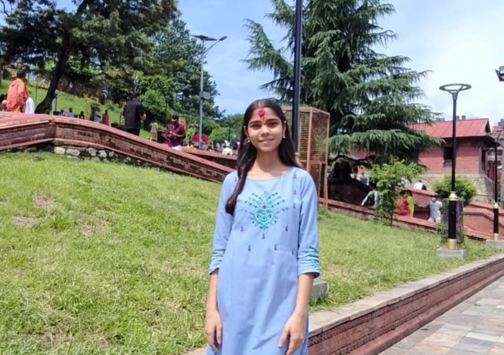

B.Tech CSE Student | Aspiring Developer | Creative Learner
Welcome to my portfolio website. This website showcases my academic background, technical skills, projects, and contact details. I enjoy learning new technologies, building practical projects, and improving myself step by step as a computer science student.

Pursuing B.Tech in Computer Science Engineering at Amritapuri School of Computing, Kerala.
Python, HTML, CSS, basic JavaScript, problem solving, and beginner-level project development.
To build a strong technical foundation, create meaningful projects, and grow into a confident developer.